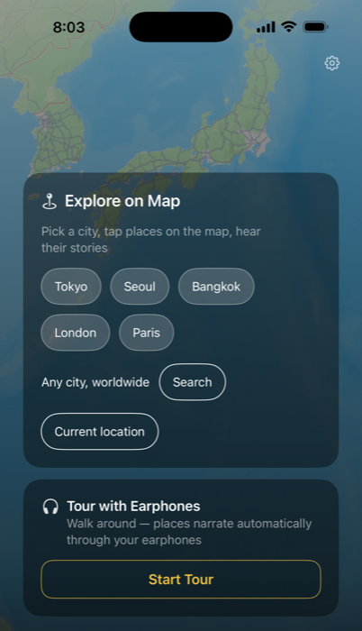

Guide Audio IA de la Ville
Chaque Lieu


Chaque Lieu
a une Histoire.
CityYoYo vous propose deux façons d'explorer une ville à pied : touchez n'importe quel lieu sur la carte pour entendre son histoire, ou mettez vos écouteurs et marchez pendant que le Mode Visite raconte tout automatiquement, mains libres.
Gratuit · iOS & Android · English, 中文, 한국어, Español, Português, Français
